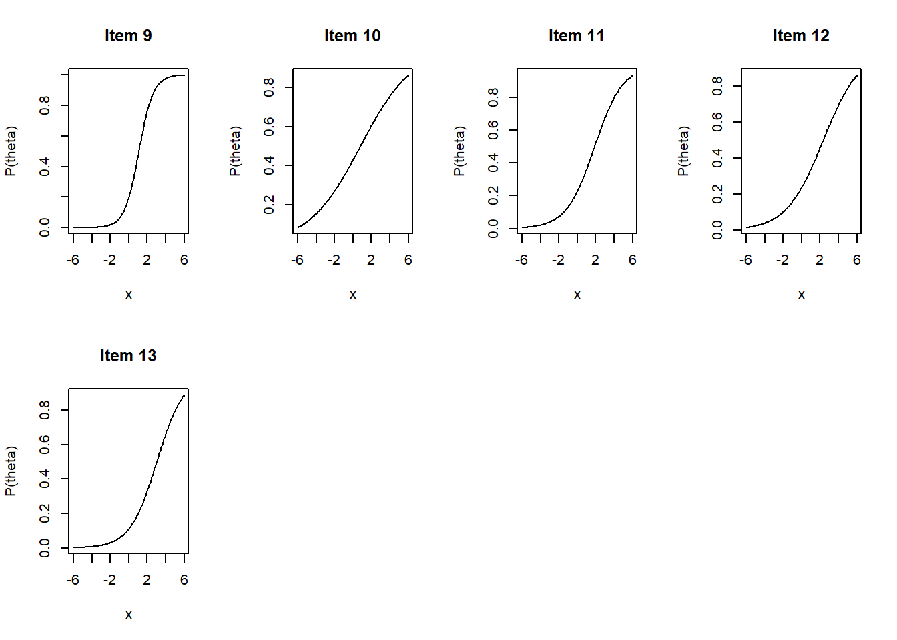
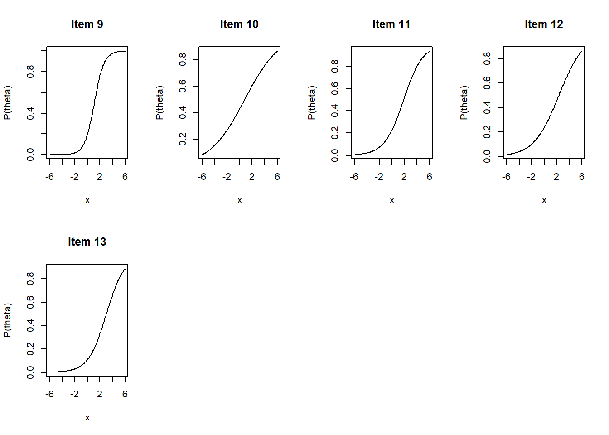

TRI Bayesiana
Dados
head(data.f)## i1 i2 i3 i4 i5 i6 i7 i8 i9 i10 i11 i12 i13
## [1,] 0 0 0 0 0 0 1 0 0 0 0 0 0
## [2,] 1 1 0 1 1 0 0 1 1 0 1 1 1
## [3,] 1 0 0 1 1 0 0 1 1 1 1 1 1
## [4,] 1 1 0 1 1 0 1 1 1 1 1 1 1
## [5,] 1 1 1 1 1 1 1 1 1 1 1 1 1
## [6,] 1 1 1 1 1 0 1 1 1 1 1 1 1dim(data.f)## [1] 1050 13acertos <- table(rowSums(data.f))
barplot(acertos)questoes <- colSums(data.f)
barplot(questoes)
Análise original
No modelo é assumido que cada sujeito possui uma habilidade (ponto ideal) denotada \(\theta_j (K \times 1)\), e que cada item possui um parâmetro de dificuldade \(\alpha_i\) e um parâmetro de discriminacao \(\beta_i (K \times 1)\). A escolha observada pelo sujeito \(j\) no item \(i\) é a matriz de dados observada que é \((\mathcal{I} \times j)\). A escolha é ditada por uma utilidade não observada:
\[z_{i,j} = - \alpha_i + \beta_i'\theta_j + \varepsilon_{i,j},\] Onde: \[\varepsilon_{i,j} \sim \mathcal{N}(0,1)\]
Mirt
mirt.2PL <- mirt(data.f,1,itemtype = '2PL', TOL = .001)##
Iteration: 1, Log-Lik: -6785.705, Max-Change: 0.40772
Iteration: 2, Log-Lik: -6732.446, Max-Change: 0.30774
Iteration: 3, Log-Lik: -6716.988, Max-Change: 0.21656
Iteration: 4, Log-Lik: -6711.958, Max-Change: 0.13352
Iteration: 5, Log-Lik: -6710.551, Max-Change: 0.09204
Iteration: 6, Log-Lik: -6710.055, Max-Change: 0.05798
Iteration: 7, Log-Lik: -6709.784, Max-Change: 0.02652
Iteration: 8, Log-Lik: -6709.746, Max-Change: 0.01802
Iteration: 9, Log-Lik: -6709.729, Max-Change: 0.01134
Iteration: 10, Log-Lik: -6709.717, Max-Change: 0.00513
Iteration: 11, Log-Lik: -6709.715, Max-Change: 0.00318
Iteration: 12, Log-Lik: -6709.714, Max-Change: 0.00200
Iteration: 13, Log-Lik: -6709.714, Max-Change: 0.00163
Iteration: 14, Log-Lik: -6709.714, Max-Change: 0.00065coef.mirt <- data.frame(coef(mirt.2PL,simplify=TRUE,IRTpars=TRUE,na.rm=TRUE)$items)
knitr::kable(coef.mirt[,1:2])| a | b | |
|---|---|---|
| i1 | 0.8115923 | -1.2997169 |
| i2 | 0.4587981 | -1.3449373 |
| i3 | 1.0971852 | -0.0185531 |
| i4 | 1.4766745 | -2.0233890 |
| i5 | 1.3721472 | -0.6064575 |
| i6 | 0.4566677 | 3.4478743 |
| i7 | 0.3885595 | -3.4823680 |
| i8 | 1.1650512 | -0.7539810 |
| i9 | 2.1807740 | -1.0935988 |
| i10 | 0.5741907 | -0.7986830 |
| i11 | 1.1493850 | -1.8233386 |
| i12 | 0.8833726 | -2.2498653 |
| i13 | 1.4171402 | -2.7664053 |
plot(mirt.2PL, type = 'trace')
Análises Bayesianas
Pacote PSCL
(Political Science Computational Laboratory)
library(pscl)Médodo de amostragem utilizado: Amostrador de Gibbs
a <- rollcall(data.f)
ideal <- ideal(a, store.item = T, maxiter = 1e4,
normalize = T)## ideal: analysis of roll call data via Markov chain Monte Carlo methods.
##
## Ideal Point Estimation
##
## Number of Legislators 1050
## Number of Items 13
##
##
## Starting MCMC Iterations...coef.pscl <- as.data.frame(ideal$betabar)
inlogit <- function(alpha, beta, x) 1/(1+exp((-alpha+beta*x)))
x <- seq(-6,6, by = 0.1)
par(mfrow = c(2,4))
for(i in 1:13){
plot(x,
inlogit(coef.pscl$Difficulty[i],coef.pscl$`Discrimination D1`[i], x),
type = "l",
main = paste("Item", i),
ylab = "P(theta)")
}
MCMCpack
# Markov Chain Monte Carlo for K-Dimensional Item Response Theory Model
library(MCMCpack)Médodo de amostragem utilizado: Amostrador de Gibbs
post1 <- MCMCirtKd(data.f, dimensions = 1, store.item = T)
sum <- summary(post1)
coefs.stats <- sum$statistics
alphas <- coefs.stats[grepl("alpha", rownames(coefs.stats)),]
round(alphas,4)## Mean SD Naive SE Time-series SE
## alpha.i1 -0.6370 0.0474 0.0005 0.0011
## alpha.i2 -0.3816 0.0413 0.0004 0.0007
## alpha.i3 -0.0160 0.0468 0.0005 0.0010
## alpha.i4 -1.6697 0.1031 0.0010 0.0058
## alpha.i5 -0.4952 0.0551 0.0006 0.0017
## alpha.i6 0.9395 0.0479 0.0005 0.0009
## alpha.i7 -0.8195 0.0455 0.0005 0.0009
## alpha.i8 -0.5268 0.0529 0.0005 0.0015
## alpha.i9 -1.3931 0.1412 0.0014 0.0129
## alpha.i10 -0.2834 0.0421 0.0004 0.0007
## alpha.i11 -1.2144 0.0697 0.0007 0.0026
## alpha.i12 -1.1616 0.0614 0.0006 0.0019
## alpha.i13 -2.0887 0.1412 0.0014 0.0111betas <- coefs.stats[grepl("beta", rownames(coefs.stats)),]
round(betas,4)## Mean SD Naive SE Time-series SE
## beta.i1.1 0.4898 0.0634 0.0006 0.0020
## beta.i2.1 0.2837 0.0534 0.0005 0.0014
## beta.i3.1 0.6573 0.0697 0.0007 0.0024
## beta.i4.1 0.7976 0.1113 0.0011 0.0064
## beta.i5.1 0.8205 0.0864 0.0009 0.0039
## beta.i6.1 0.2484 0.0600 0.0006 0.0018
## beta.i7.1 0.2234 0.0573 0.0006 0.0017
## beta.i8.1 0.7014 0.0785 0.0008 0.0029
## beta.i9.1 1.2872 0.1810 0.0018 0.0188
## beta.i10.1 0.3545 0.0561 0.0006 0.0016
## beta.i11.1 0.6508 0.0847 0.0008 0.0037
## beta.i12.1 0.4990 0.0748 0.0007 0.0029
## beta.i13.1 0.6900 0.1313 0.0013 0.0103coef.mcmc <- data.frame("Dificuldade" = alphas[,1], "Discriminacao" = betas[,1])
x <- seq(-6,6, by = 0.1)
inlogit <- function(alpha, beta, x) 1/(1+exp(-(alpha+beta*x)))
par(mfrow = c(2,4))
for(i in 1:13){
plot(x,
inlogit(coef.mcmc$Dificuldade[i],coef.mcmc$Discriminacao[i], x),
type = "l",
main = paste("Item", i),
ylab = "P(theta)")
} 

JAGS
library("rjags")data.list <- data.f %>%
as.data.frame() %>%
rownames_to_column(var = "id") %>%
pivot_longer(i1:i13,
names_to = "item",
values_to = "resp") %>%
mutate(item = substr(item, 2,3)) %>%
as.list()
data.list$N <- length(data.list$resp)
data.list$Nid <- length(unique(data.list$id))
data.list$Nitem <- length(unique(data.list$item))Abaixo definimos o modelo, para melhor convergência e devido à natureza do modelo, utilizamos uma priori beta para o parâmetro beta, assim evitamos valores negativos de discriminação e a interação entre os parâmteros beta e theta fica menos turbulenta.
cat("model{
## cada resposta
for(n in 1:N){
resp[n] ~ dbern(z[n])
logit(z[n]) <- -alpha[item[n]] + beta[item[n]]*theta[id[n]]
}
## Para o individuo ind, i = 1, ..., Nid
for(ind in 1:Nid){
theta[ind] ~ dnorm(0, 1)
}
## Para o item it, i = 1, ..., Nitem
for(it in 1:Nitem){
alpha[it] ~ dnorm(0, 1)
beta[it] ~ dbeta(1, 1)
}
}", file="sim.jags")sim.jags <- jags.model(file = "sim.jags",
data = data.list, n.chains = 3, n.adapt = 1000)
fit.jags <- coda.samples(model=sim.jags,
n.iter=10000, thin=10,
variable.names=c("alpha","beta", "theta"))sum.jags <- summary(fit.jags)
jags.stats <- sum.jags$statistics
alphas <- jags.stats[grepl("alpha", rownames(jags.stats)),]
round(alphas,4)## Mean SD Naive SE Time-series SE
## alpha[1] -1.0410 0.0818 0.0015 0.0014
## alpha[2] -0.6146 0.0688 0.0013 0.0012
## alpha[3] -0.0057 0.0741 0.0014 0.0013
## alpha[4] -2.5826 0.1152 0.0021 0.0022
## alpha[5] -0.7222 0.0758 0.0014 0.0015
## alpha[6] 1.5830 0.0895 0.0016 0.0016
## alpha[7] -1.3497 0.0790 0.0014 0.0014
## alpha[8] -0.8147 0.0768 0.0014 0.0014
## alpha[9] -1.6615 0.0905 0.0017 0.0015
## alpha[10] -0.4559 0.0691 0.0013 0.0013
## alpha[11] -1.9641 0.1028 0.0019 0.0019
## alpha[12] -1.9728 0.1031 0.0019 0.0019
## alpha[13] -3.4217 0.1673 0.0031 0.0031betas <- jags.stats[grepl("beta", rownames(jags.stats)),]
round(betas,4)## Mean SD Naive SE Time-series SE
## beta[1] 0.7787 0.1012 0.0018 0.0019
## beta[2] 0.4712 0.0885 0.0016 0.0017
## beta[3] 0.9476 0.0447 0.0008 0.0008
## beta[4] 0.9402 0.0523 0.0010 0.0010
## beta[5] 0.9631 0.0340 0.0006 0.0006
## beta[6] 0.4479 0.1109 0.0020 0.0021
## beta[7] 0.3871 0.0982 0.0018 0.0018
## beta[8] 0.9490 0.0453 0.0008 0.0008
## beta[9] 0.9754 0.0235 0.0004 0.0004
## beta[10] 0.5931 0.0949 0.0017 0.0018
## beta[11] 0.9076 0.0723 0.0013 0.0013
## beta[12] 0.8502 0.0961 0.0018 0.0018
## beta[13] 0.8895 0.0923 0.0017 0.0017coef.jags <- data.frame("Dificuldade" = alphas[,1], "Discriminacao" = betas[,1])
x <- seq(-6,6, by = 0.1)
inlogit <- function(alpha, beta, x) 1/(1+exp(-(alpha+beta*x)))
par(mfrow = c(2,4))
for(i in 1:13){
plot(x,
inlogit(coef.jags$Dificuldade[i],coef.jags$Discriminacao[i], x),
type = "l",
main = paste("Item", i),
ylab = "P(theta)",
ylim = c(0,1))
}
Convergência
Abaixo apresentamos os traços das cadeias para ambos os parâmetros dos dois primeiros itens:
bayesplot::mcmc_trace(fit.jags, pars = c("alpha[1]","beta[1]","alpha[2]","beta[2]"))Vemos que as cadeias aparentam convergência, conforme mencionado anteriormente os parâmetros de discriminação partiram apenas de valores positivos pois, ao permitir valores negativos juntamente com a interação entre o traço latente é possível que beta e theta tenham seus sinais invertidos.
Em seguida apresentamos também os traços para os primeiros 4 thetas, que são o parâmetro de traço latente de cada um dos indivíduos.
bayesplot::mcmc_trace(fit.jags, pars = c("theta[1]","theta[2]","theta[3]","theta[4]"))======= # Comparação entre os resultados
dificuldade <- data.frame("item" = paste0("i",1:13),
"mirt" = order(coef.mirt$b),
"pscl" = order(coef.pscl$Difficulty),
"mcmc" = order(coef.mcmc$Dificuldade),
"jags" = order(coef.jags$Dificuldade))
knitr::kable(dificuldade)| item | mirt | pscl | mcmc | jags |
|---|---|---|---|---|
| i1 | 7 | 13 | 13 | 13 |
| i2 | 13 | 4 | 4 | 4 |
| i3 | 12 | 9 | 9 | 12 |
| i4 | 4 | 11 | 11 | 11 |
| i5 | 11 | 12 | 12 | 9 |
| i6 | 2 | 7 | 7 | 7 |
| i7 | 1 | 1 | 1 | 1 |
| i8 | 9 | 8 | 8 | 8 |
| i9 | 10 | 5 | 5 | 5 |
| i10 | 8 | 2 | 2 | 2 |
| i11 | 5 | 10 | 10 | 10 |
| i12 | 3 | 3 | 3 | 3 |
| i13 | 6 | 6 | 6 | 6 |
discriminacao <- data.frame("item" = paste0("i",1:13),
"mirt" = order(coef.mirt$a),
"pscl" = order(-coef.pscl$`Discrimination D1`),
"mcmc" = order(coef.mcmc$Discriminacao),
"jags" = order(coef.jags$Discriminacao))
knitr::kable(discriminacao)| item | mirt | pscl | mcmc | jags |
|---|---|---|---|---|
| i1 | 7 | 7 | 7 | 7 |
| i2 | 6 | 6 | 6 | 6 |
| i3 | 2 | 2 | 2 | 2 |
| i4 | 10 | 10 | 10 | 10 |
| i5 | 1 | 1 | 1 | 1 |
| i6 | 12 | 12 | 12 | 12 |
| i7 | 3 | 11 | 11 | 13 |
| i8 | 11 | 3 | 3 | 11 |
| i9 | 8 | 8 | 13 | 4 |
| i10 | 5 | 13 | 8 | 3 |
| i11 | 13 | 5 | 4 | 8 |
| i12 | 4 | 4 | 5 | 5 |
| i13 | 9 | 9 | 9 | 9 |